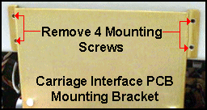

This procedure describes how to install the incubator pick-and-place module.
Perform this procedure after the incubator pick-and-place has been removed:
for repair.
to allow access to another module in the instrument.
for replacement.
Prepare the instrument.
Remove the center gray rear cover and place it in a location where it is safe from damage.
Remove the upper rear cover and place it in a location where it is safe from damage.
Open the upper left and right front covers.
Remove power from the motors by using the switch on the Power Distribution PCB labeled "All DC power (except CPU and reagent coolers)".
Install the incubator pick-and-place.
Caution: Do not remove the towers from the base plate (if at all possible). Removing the towers makes it much more difficult to adjust and align the sample pipettor module after it is installed.
Install the gantry using one of two options: install new gantry only or install new gantry and new mounting towers.
If replacing a pick-and-place (new gantry only), remove the new gantry from the towers and install it on the mounting towers.
Manually move the pick-and-place carriage to the far right.
Align the gantry mounting holes with the tower locating pins.
Push the gantry onto the pins.
Tighten the two captive screws that hold the gantry to the towers.
If installing a pick-and-place and mounting towers, mount each tower (with the gantry attached) to the instrument base plate using the four mounting screws.
Note: The location of the incubator pick-and-place towers might have been marked on the instrument base plate.
Caution: If the tower locations were not marked on the base plate, adjustments and alignments are required.
Replace the connectors onto the incubator pick-and-place interface PCB.
J1 - Ribbon Cable
J2 - Incubator P&P Motor
Install the air line into the incubator pick-and-place air valve. Note:
Push the tubing fully into the incubator pick-and-place air valve fitting.
Replace these connectors onto the carriage interface PCB:
J1 - Ribbon Cable
J2 - Carriage P&P Motor
Replace the four screws attaching the carriage interface PCB bracket to the instrument.

Replace the carriage connector wires into the cable keepers located on the back side of the incubator pick-and-place gantry.
Insert the interlock bypass.
Restore power to the motors by using the switch on the Power Distribution PCB labeled "All DC power (except CPU and reagent coolers)".
Verify the proper operation of the incubator pick-and-place.
Note: If the sample pick-and-place was installed before installing the incubator pick-and-place, confirm the alignments to all intersecting devices for the sample pick-and-place and perform 25 cycles of the Sample Route exerciser.
Confirm the pick-and-place alignments to all intersecting devices. Align and adjust as needed.
Caution: If mounting towers have been removed, adjustments must be verified before performing alignments.
Initialize the instrument.
Perform 25 cycles of the Reaction Route exerciser to confirm correct movement of the incubator pick-and-place.